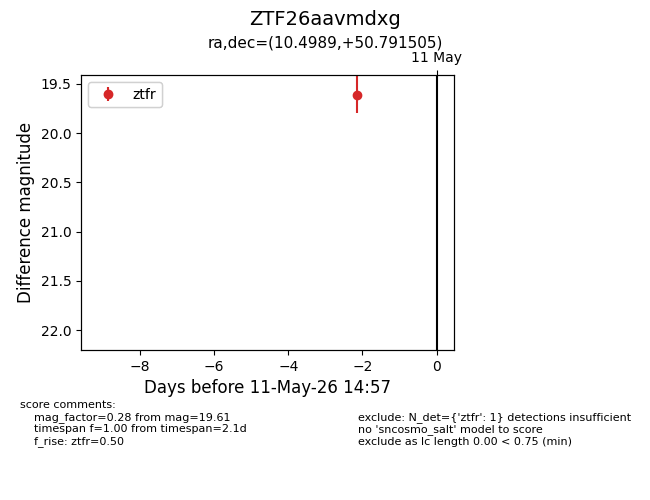
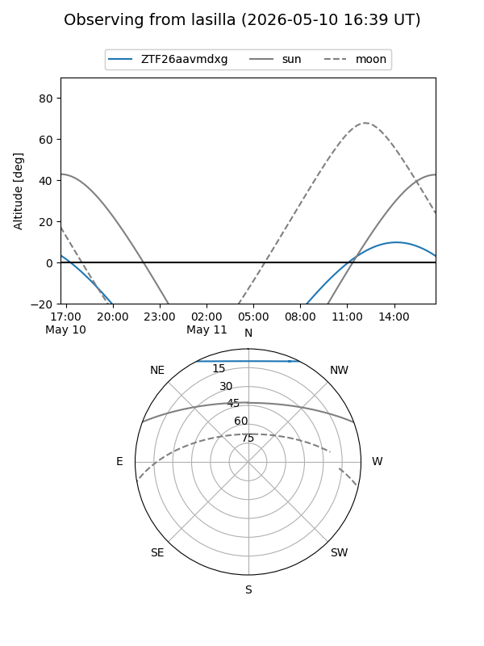
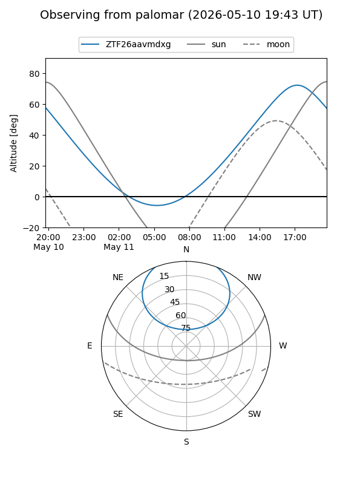

ZTF26aavmdxg
Target ZTF26aavmdxg at 2026-05-11 14:58
Aliases and brokers:
FINK: link
Lasair: link
ALeRCE: link
alt names
ZTF26aavmdxg (ztf,fink_ztf)
Coordinates:
equatorial (ra, dec) = 10.4989,+50.79151
equatorial (HMS+DMS) = 00:41:59.73,+50:47:29.42
galactic (l, b) = (121.4063,-12.05227)
Flags:
Photometry:
last ztfr=19.61
1 ztfr detections
Lightcurve

Visibility


Additional plots